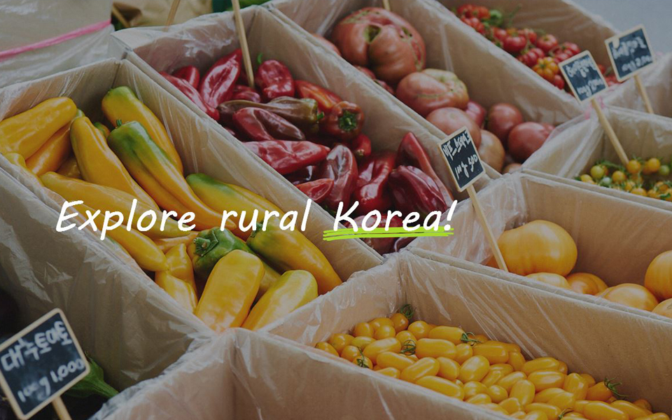
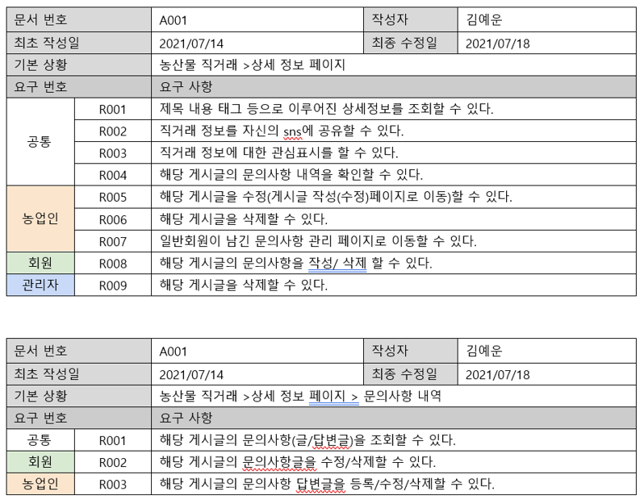
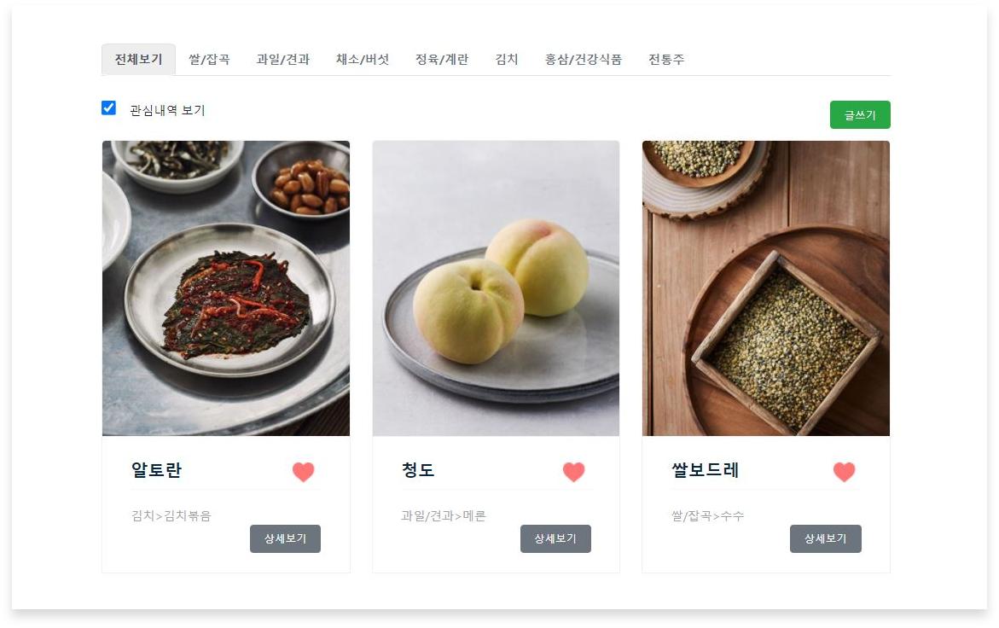
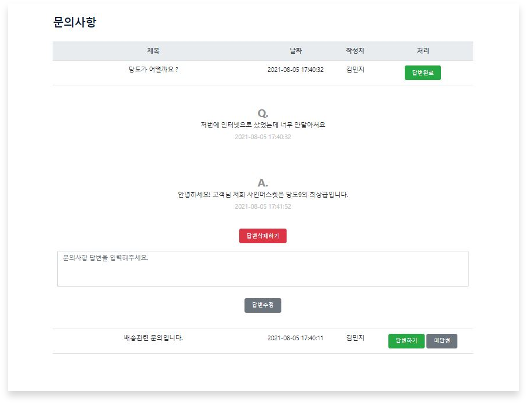

슬기로운 농촌생활 웹사이트
- 카테고리: Web(Oracle)
- 진행 날짜: 2020. 08. 05
👩🌾Java 기반 농촌 활성화 웹 프로젝트 ‘슬기로운 농촌생활＇
- 개발 기간 : 2021.07.13 ~ 2021. 08. 05 (24일간)
- 개발 환경 : Windows 10 intel® i7-6700, CPU 16GB, x64 / JDK 1.8.0_221 / Eclipse IDE for Enterprise Java Dvelopers / SQL Developer Dbeaver Visual Studio Code Version 1.41
- 사용 기술 :
컬렉션(ArrayList, HashMap ) / 오버로딩, 오버리이딩(생성자 오버로딩, 객체에 속한 ArrayList 함수의 재구현)
DBMS(Procedure, View 등) / JDBC(Connection, PreparedStatment, ResultSet, CallableStatment)
HTML/CSS, JavaScript, JSP / Open API(JavaMail API,
Kakao Map API, KLID(한국 지역 정보 개발원) 주소 API, Kakao Talk, Twitter, Naver 공유 API, High Chart API
- 개발 인원 : 6명
- 주제 : 웹 기반 여행, 맛집 등 정보 제공 프로그램 개발 프로젝트
- 개요 :
1. 사용자가 원하는 지역의 농촌 관련 프로그램을 검색하기 수월하다.
2. 농촌관련 종사자가 해당 프로그램을 운영하기 용이하다.
3. 농촌에 대한 다양한 정보를 공유하며, 농촌경제를 활성화 시킬 수 있다.
4. 농업인은 부족한 일손을 채우고 일반 사용자는 농촌일을 돕고 돈을 벌 수 있다. - ERD(물리 데이터베이스) 총 19개의 테이블로 구성되어 있다.
- 요구사항 명세서 
- 기능소개
메인화면;Main
카테고리별 새로운 글을 확인할 수 있는 메인 페이지이다.
농산물직거래;Like사용자가 원하는 상품에 좋아요를 누르고 관심내역 보기 체크박스를 선택하면 내가 좋아요 한 상품 리스트만 모아서 볼 수 있다
농산물직거래;Detail상품의 상세페이지를 확인 할 수 있고 공유 API로 네이버, 카카오톡, 트위터에 해당 상품을 공유할 수 있다.
농산물직거래;QnA상품의 퍈매자에게 문의사항을 남기고 판매자는 해당 문의사항에 답변을 남길수 있다.
농산물직거래; Apply List농업인사용자는 내가 등록한 모든 게시글을 확인 할 수 있다.
농산물직거래; Edit농업인사용자는 내가 등록한 글을 수정할 수 있으며, 주소 API를 이용하여 주소를 입력할 수 있게 하였다.
상세 사진은 총 3개까지 등록 가능하다.
농작물직거래; Chart관리자는 카테고리별 게시물 수와, 정상/정지/탈퇴자수를 차트형태로 실시간으로 확인 가능하다.